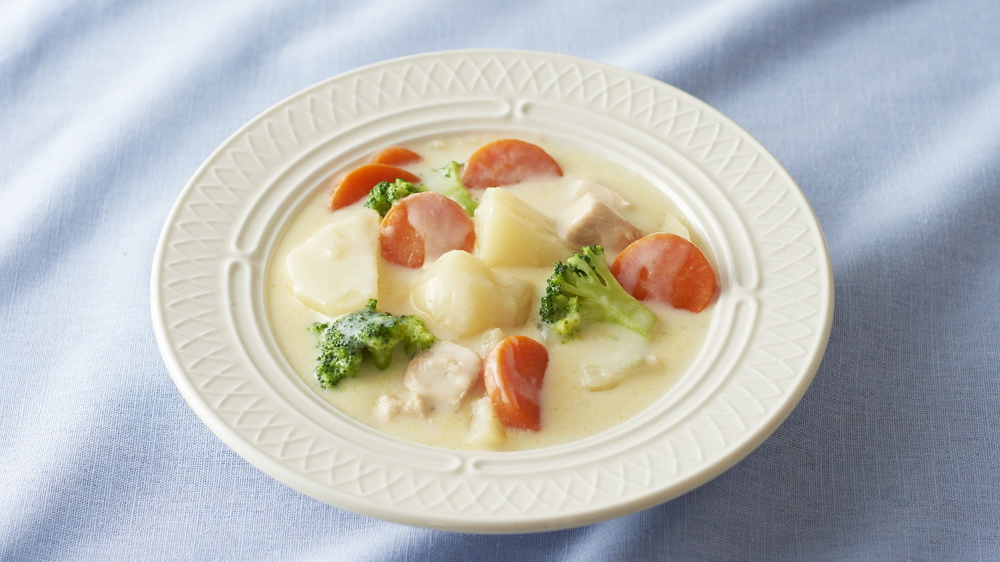

Kurimu Shichu

Description
It is a Japanese cream stew, chicken is often used in the stew, but you can prepare it with salmon or tofu and would be delicious too
Ingredients
For four people
- 1 kg of mixed vegetables (potatoes, carrots, mushrooms, onions, zucchini, brocoli, green beans, asparagus, etc
- 400 gr salmon fillet
- 300 ml broth
- 2 tbsp butter
- 2 tbsp flour
- 250 ml milk
- 100 ml cream
- 2 tbsp grated cheese, eg mozzarella
Steps
- Cut the vegetables into bite-sized pieces, cut the onion into strips. Cut the salmon into bite-sized cubes.
- Heat 1 tbsp vegetable oil in the wok, sear the salmon until crispy all over, season with salt and pepper and remove. Then roast the onion until translucent, lightly fry heat-resistant vegetables (potatoes, carrots, mushrooms) so that the aroma unfolds. Pour in the broth ( e.g. dashi ) until everything is lightly covered. Cook until the vegetables are cooked, add green vegetables such as broccoli and cook for 1-2 minutes.
- During this time, the cream sauce is prepared. To do this, melt 2 tablespoons of butter in a saucepan and heat 2 tablespoons of flour in it until bubbles form. Be careful not to color it as this is a white sauce. Add the milk and cream in portions, stirring again and again with a whisk so that a homogeneous, lump-free mass is obtained every time. Finally stir in the cheese. The sauce then has a very creamy consistency like yoghurt.
- Mix the sauce with the cooked vegetables in the wok, add the salmon. Simmer for another 2-3 minutes and enjoy warm.